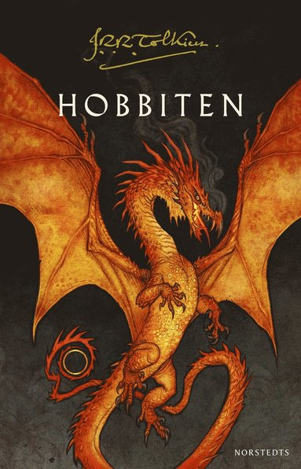

Klanen
Pascal Engman
Följ med på en resa genom Sollentuna, där två barn föds på samma dag men växer upp i helt
olika världar. Josef, uppvuxen i en invandrartät stadsdel, ser hur familhen Mansour tar
kontroll över gatan genom våld och utpressning. Antonia, från en välbärgad familj, ser sin
trygg tillvaro rämna. Mellan dessa världar kämpar individer för att hitta sin pplats i en
eskalerande spiral av droghandel, hedersvåld och ständiga dödsskjutningar.

Gränsöverskridaren
Viveca Sten
I den sjätte delen av succéserien Åremorden drar en oväntad snöstorm in över
Åre under höstlovet. Två knarksmugglare hittas ihjälfrusna nära norska gränsen, och en
tonåring dras in i rå gänkriminalitet via nätet. När en livsfarlig kokain börjar spridas
i byn måste poliserna Hanna Ahlandet och Daniel Lindskog kämpa mot klockan för att stoppa
katastrofen.

A Court of Thornes and Roses
Sarah J. Maas
Följ Feyre Archeron, en ung jägar, som dras in i den magiska världen Prythian efter att ha
dödat en varg som visar sig vara en Fae. där möter hon Tamlin, en high Fae, och tvingaas navigera
mellan förbjuden kärlek, politiska inntriger och mörka hemligheter. En fängslande blandning av romanntik, magi
och action som kommer hålla fast dig från första sidan.

Fourth Wing
Rebecca Yarros
Hoppa in i en explosiv romantasy där Violet Sorrengaiö tvingas lämna sina drömmande plander som
skriftlärd och istället kastas in i den brutaöa världen på Basgiath War Collage för att bli drakryttar.
Ett liv fyllt av farliga prov, politiska intriger och förbjudna känslor. En berättelse som blandar svek, magi
och passion med varje sida fylld av adrenalinkickar!

Heartless Hunter
Kristen Ciccarelli
Den unga häxan Rune Wintres lever ett dubbelliv där hon på dagtid är ett oskyldigt societetsbarn,
men under natten den mystiska Crimsom Moth, en vigilante som räddar sina mot föröljelse.
När hon tvingas spela ett farligt spel med Gideon Sharpe, en obeveklig häxjägare, uppstår en förbjuden
attraktion där varje felsteg kan bli dödlig. En romantisk fantasyfullträff som kombinerar enemies-to-lovers,
revolution och magi!

Powerless
Lauren Roberts
Powerless är den första delen i en fängslange YA-fantasytrilogi fylld av förnjuden magi,
hjärtskärande romantik och dödliga tävlingat. Paedyn Gray, född kraftlös i ett rike där bara eliten får
krafter, tvingas låtsas vara en av dem när hon räddar en prins och plötsligt dras in i Reningsprövningarna,
där varje felsteg kan kosta henne livet. En kraftfull berättelse om identitet, makt och mod som får dig att sluka sidorna!

Yellowface
R.F. Kuang
Yellowface är en vass, satirisk thriller om makt, identitet och kulturell stöld i förlagsvärlden.
När en författare stjäl sin döda väns manus och karriär, dras hon in i en spiral av lägner och skuld.
En smart, spännande och högaktuell roman som både underhåller och utmanar!

Hembiträdet
Freida McFadden
Hembiträdet är en nagelbitande psykologisk thriller där ingenting är som det verkar.
När Millie börjar jobba hos den perfekta familje Winchester, dröjer det inte länge innan fasaden spricker och
en mörk hemlighet avslöjas. En beroendeframkallande bladvändare du inte kommer kunna lägga ifrån dig
!

Hobbiten
J.R.R. Tolkien
Hobbiten är ett magiskt äventyr, perfekt för både unga och vuxna läsare.
Följ den oväntade hjälten Bilbo Bagger på en resa fylld av drakar, skatter och faror bortom
hans vildaste fantasi. En tidlös fantasyklassiker som fångar hjärtat och tändeer äventyrslusten!

Twilight
Stephenie Meyer
Twilight är en romantisk och spännande berättelse om förnjuden kärlek mellan tonårstjejen
och den mystiske vampyren Edward. När deras världar kolliderar hotar både passion och fara att slita den isär.
En modern kärleksklassiker för dig som älskar intensiv romantik med övernaturliga inslag.

Dune
Frank Herbert
Dune är en science fiction-roman som tar dig till ökenplaneten Arrakis- en värld
av maktkamp, mystik och öde. Följ Paul Atreides i en gripande berättelse om överlevnad, profertior
och kampen om galaxens mest värdefulla resurs melange. Perfekt för dig som älskar storslagna
äventyr med djup och driv!